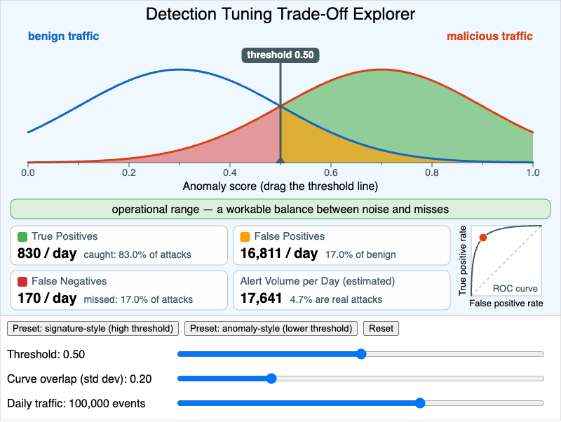

Detection Tuning Trade-Off Explorer¶

Run the Detection Tuning Trade-Off Explorer MicroSim Fullscreen
You can include this MicroSim on your own page with the following iframe:
<iframe src="https://dmccreary.github.io/cybersecurity/sims/detection-threshold-explorer/main.html" height="602" width="100%" scrolling="no"></iframe>
About this MicroSim¶
Every IDS, IPS, EDR, and SIEM rule ultimately reduces to a question: how suspicious does an event have to look before we alert on it? This MicroSim makes that question concrete. The blue curve is the distribution of anomaly scores for benign traffic and the orange curve is the distribution for malicious traffic. They overlap, because real attacks sometimes look ordinary and ordinary traffic sometimes looks strange. The slate vertical line is the detection threshold: everything to its right raises an alert.
Drag the line (or use the Threshold slider) and the shaded areas change:
- Green — malicious events above the threshold: true positives.
- Amber — benign events above the threshold: false positives.
- Red — malicious events below the threshold: false negatives, the missed attacks.
- Unshaded — benign events below the threshold: true negatives.
The four readouts convert those areas into events per day using the Daily traffic slider (log-scaled from 1,000 to 1,000,000 events) and a fixed assumption that 1% of events are malicious. The small chart on the right plots the current operating point on the ROC curve for the chosen amount of curve overlap. The caption names the zone you are in: the alert fatigue zone when more than a quarter of benign events alert, the missed-attack zone when fewer than half of the attacks alert, the operational range in between, and a no-win zone when the curves overlap so much that both problems occur at once.
The lesson hiding in the Alert Volume readout is the base-rate effect. Because benign traffic outnumbers attacks 99 to 1, even a modest false-positive rate produces far more false alerts than true ones — at the default settings fewer than 5% of the alerts an analyst sees are real. Moving the threshold never removes that tension; it only chooses which kind of error you pay for. The only way to get both a high catch rate and a quiet queue is a better detector, which is what lowering Curve overlap simulates.
The two preset buttons contrast the tuning styles from the chapter: a signature-style detector sits at a high threshold (0.85) and stays quiet but passes over anything that does not match closely, while an anomaly-style detector sits lower (0.55) and catches more at the price of noise. The numbers come from a simple two-Gaussian teaching model, not from a measured detector.
Lesson Plan¶
Learning objective (Bloom: Analyze). Students will analyze how the choice of detection threshold trades off true-positive rate against false-positive rate, and will reason about the operational consequences (alert fatigue, missed attacks) of the two extremes.
Suggested classroom use (10–15 minutes).
- Predict. With the defaults showing, ask students to predict what happens to each of the four readouts if the threshold moves to 0.85. Then press the signature-style preset and compare.
- Explore the extremes. Have students drag the threshold to each end of the axis and record the alert volume and the percentage of alerts that are real.
- Change the problem, not the threshold. Reset, then move Curve overlap from 0.20 down to 0.10 and up to 0.40 while watching the ROC curve bend toward or away from the top-left corner.
- Scale it. Hold the threshold fixed and sweep Daily traffic from 1,000 to 1,000,000 events. Students should notice that the rates do not change but the analyst workload does.
Discussion questions:
- At the default settings the detector catches most attacks, yet fewer than one alert in twenty is real. Which number in the model is responsible for that, and why can't threshold tuning fix it?
- A SOC has three analysts who can each triage about 100 alerts per day. With 100,000 events per day and the default overlap, where must the threshold sit, and what fraction of attacks does the team then miss?
- An IPS drops traffic above the threshold instead of only alerting. How does that change which type of error is more expensive, and which way would you move the threshold?
- Find a setting that lands in the no-win zone. What would you have to change about the detector, rather than the threshold, to get out of it?
References¶
- Receiver operating characteristic — Wikipedia
- Base rate fallacy — Wikipedia
- Intrusion detection system — Wikipedia
- Alarm fatigue — Wikipedia
- Axelsson, S. (2000). The Base-Rate Fallacy and the Difficulty of Intrusion Detection. ACM Transactions on Information and System Security, 3(3).
Specification¶
The full specification below is extracted from Chapter 8: "Network Security Foundations: Protocols, Firewalls, and Detection".
Type: microsim
sim-id: detection-threshold-explorer
Library: p5.js
Status: Specified
Learning objective (Bloom: Analyze): Students will analyze how the choice of
detection threshold trades off true-positive rate against false-positive rate,
and will reason about the operational consequences (alert fatigue, missed
attacks) of the two extremes.
Visual layout: two overlapping bell curves on an "anomaly score" axis (benign
centered at 0.3, malicious centered at 0.7) crossed by a draggable threshold
line. True positives shaded green, false positives amber, false negatives red.
Four live readouts (True Positives, False Positives, False Negatives, Alert
Volume per Day) and a small ROC chart showing the current operating point.
Controls: sliders for Threshold (0.0-1.0), Curve overlap (0.1-0.5), and Daily
traffic volume (1,000-1,000,000, log-scaled); preset buttons for
signature-style (0.85) and anomaly-style (0.55) thresholds; Reset.
Behavior: readouts update in real time; a caption names the alert fatigue
zone, the missed-attack zone, or the operational range.
Defaults: threshold 0.5, overlap 0.2, traffic 100,000 events/day.
Implementation notes. The drawing region is taller than the 800 × 500 in the specification (the canvas is 600 px high) so that the four readouts, the ROC chart, and three slider rows all fit without overlap. Three modeling choices are not in the specification and were added so the numbers are well-defined: the two normal curves are truncated to the visible 0–1 score axis, 1% of events are assumed malicious, and the zone caption is driven by rates (false-positive rate above 25%, true-positive rate below 50%) rather than fixed threshold positions, so it stays meaningful when the overlap changes.